Few silhouettes carry as much quiet authority as the bandhgala. Structured, collared, and unmistakably royal in origin, it has become one of the most versatile pieces in a groom's wardrobe — equally at home at a daytime engagement, a formal wedding ceremony, or a black-tie reception. But choosing the right bandhgala means understanding fabric, fit, and function together, not just picking whatever looks good on the hanger. This guide walks through everything, from its royal roots to the exact checklist to run through with your tailor.
Why the Bandhgala Is a Wedding Wardrobe Staple
Unlike a sherwani, which is built for one specific traditional register, the bandhgala moves easily between functions — a groom can wear one to the engagement, a slightly dressier version to the wedding, and a third at the reception, without ever repeating the same silhouette.
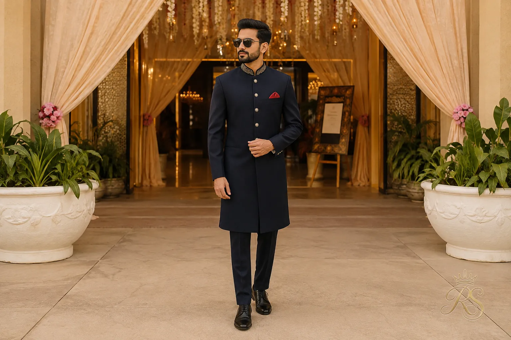
One silhouette, many functions: the bandhgala adapts across the entire wedding week.
If you're only investing in one tailored piece for the wedding season, make it a bandhgala in a neutral tone — it re-wears for formal events long after the wedding is over.
What Is a Bandhgala Jacket? Origins & History
The bandhgala traces back to 19th-century Jodhpur, where it was designed as formal royal courtwear for the Rajputana nobility — its name literally translates to "closed neck," referring to the high, structured collar that replaced the open lapel of Western coats.
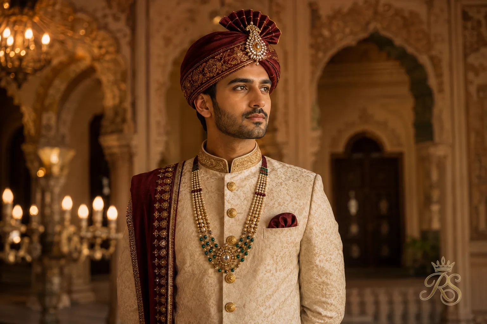
The silhouette hasn't changed much since its royal Jodhpur origins.
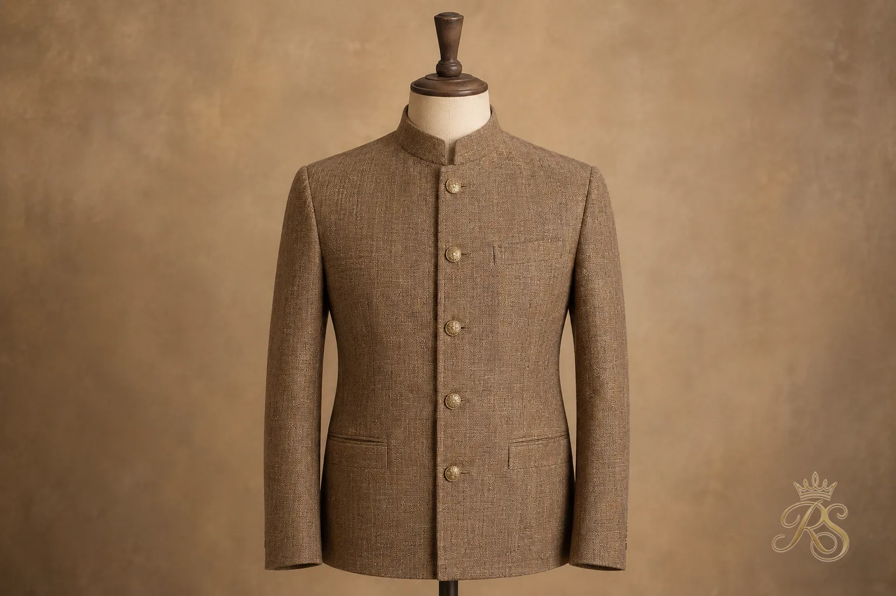
The Nehru jacket popularized a shorter, softer cousin of the original bandhgala.
What was once exclusively formal courtwear has since become a staple across Indian weddings, corporate formalwear, and even international red carpets — proof of how well the silhouette translates across contexts.
Anatomy of a Bandhgala: Collar, Buttons & Fit
Understanding the individual construction elements of a bandhgala makes it far easier to spot a well-made one — and to communicate clearly with a tailor about exactly what you want.
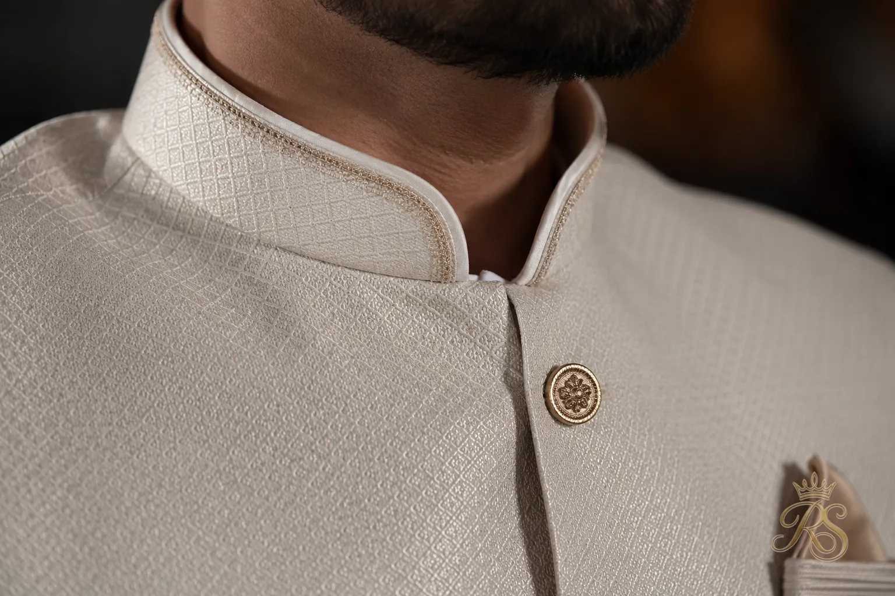
The collar: a stiff, standing mandarin collar is the single defining feature of the bandhgala.
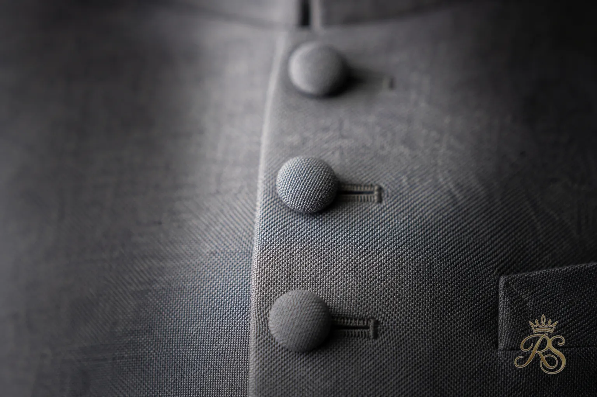
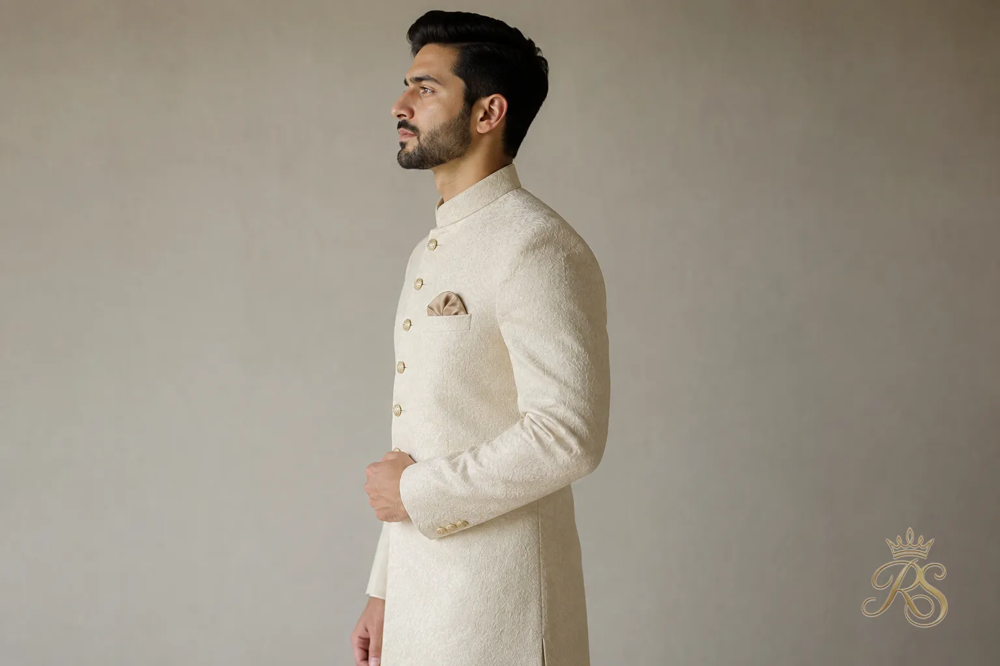
- Collar should sit snug against the neck without digging in when seated
- Buttons traditionally run in a single close row up to the collar — fabric-covered buttons read more formal
- Shoulder seams must sit exactly on the shoulder bone; padding should be minimal for a modern fit
- Length typically falls mid-thigh, though shorter cuts have become popular for daytime functions
Fabric Guide: Velvet, Silk, Jacquard & Linen
The fabric decides how formal, how warm, and how photograph-ready the bandhgala will be — and it's the single factor most grooms underweight when choosing between two otherwise similar designs.
Velvet reads formal and rich under evening lighting — best suited to winter weddings.
Jacquard-woven silk adds subtle pattern without needing embroidery on top.
For summer or daytime weddings, a lightweight linen-cotton blend bandhgala breathes far better than silk or velvet, without sacrificing the structured silhouette that makes the jacket work in the first place.
Bandhgala Colors by Wedding Function
The right color depends heavily on which function you're dressing for — what reads elegant at a daytime engagement can feel out of place at an evening reception, and vice versa.
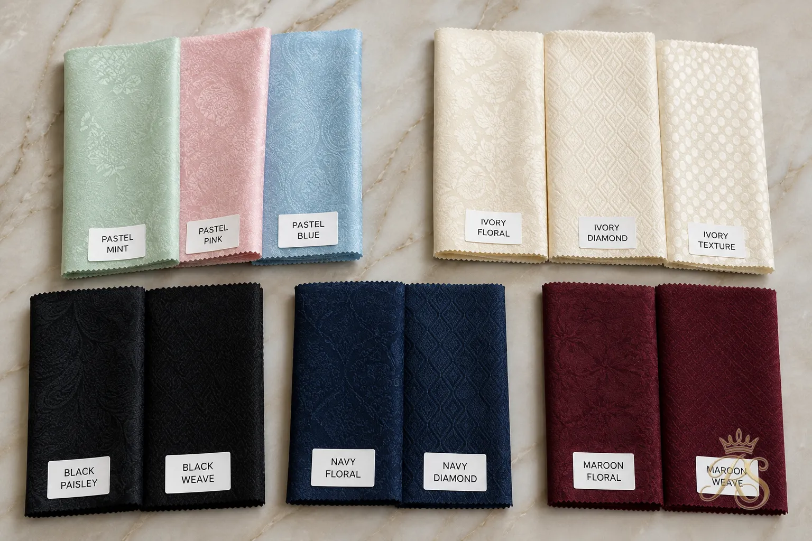
Match the function, not just the trend: the same groom can wear three different bandhgala tones across one wedding week.
| Function | Recommended Tone | Why It Works |
|---|---|---|
| Engagement / Roka | Pastel or dove grey | Reads formal without competing with daytime lighting |
| Wedding ceremony | Ivory, cream, or gold | Photographs well against traditional mandap backdrops |
| Reception | Black, navy, or deep maroon | Holds up to evening lighting and formal photography |
| Sangeet | Jewel tones or metallics | Festive enough for a dance-heavy evening function |
Bandhgala vs Sherwani vs Nehru Jacket
These three silhouettes get confused often, but each serves a distinct purpose — knowing the difference helps you pick the right one for the right function instead of defaulting to whatever the shop suggests first.
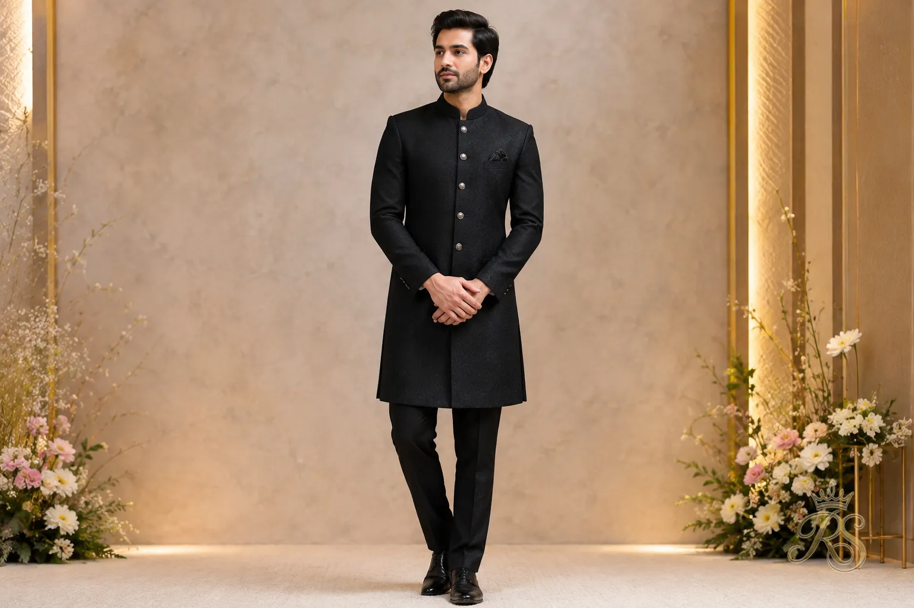
Bandhgala
Fitted, collared, and formal — works across day and evening functions with minimal layering.
Sherwani
Longer, often embroidered, and layered over a kurta — reserved for the main ceremony.
Nehru Jacket
Shorter and softer-structured — a more casual, everyday cousin of the bandhgala.
"Where the sherwani says ceremony and the Nehru jacket says everyday, the bandhgala says formal — which is exactly why it fits almost every wedding function in between."
Styling by Body Type
Because the bandhgala is such a structured, fitted silhouette, small tailoring adjustments based on build make a much bigger visual difference here than they would on a looser kurta or sherwani.
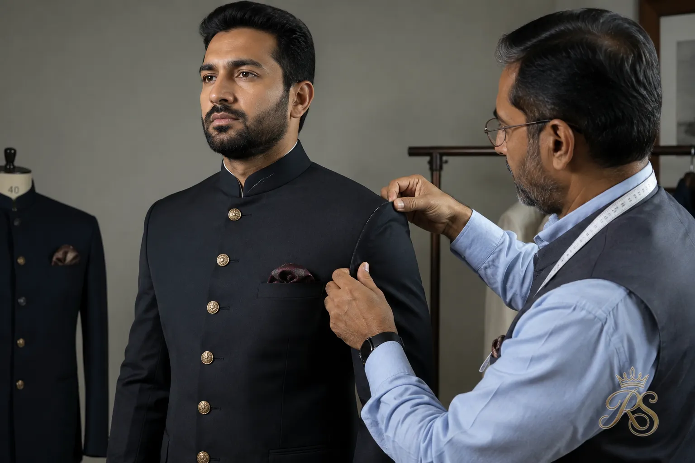
Broader builds should avoid excess shoulder padding — the natural frame does the work already.
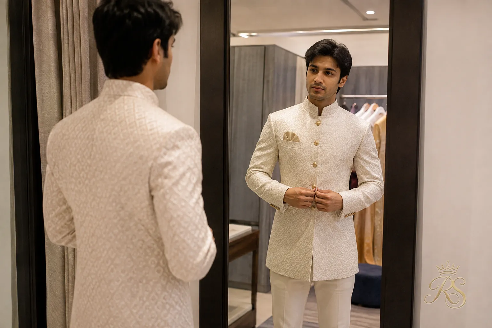
A slimmer build can carry a slightly longer jacket length for added visual structure.
Pairing Bottoms: Churidar, Trousers & Dhoti Pants
What goes underneath the bandhgala shapes the entire silhouette just as much as the jacket itself — the three most common pairings each give a distinctly different final look.
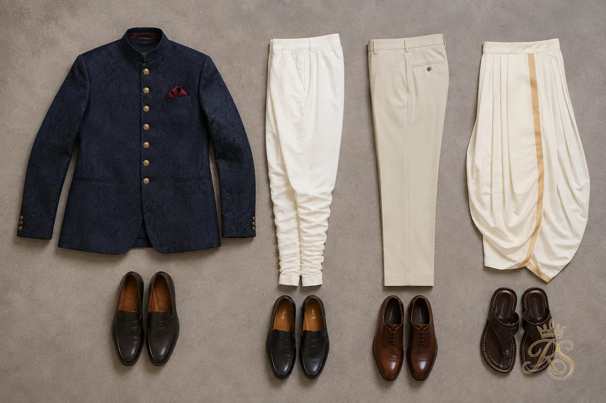
Churidar for a traditional taper, tailored trousers for a modern suit-like finish, dhoti pants for a regional drape.
Tailored trousers give the bandhgala a distinctly contemporary, almost suit-like finish — a popular choice for grooms who want the formality of a jacket without leaning fully traditional.
Footwear That Works With a Bandhgala
The right shoe depends on which bottom you've paired the bandhgala with — traditional bottoms call for traditional footwear, while tailored trousers open the door to more formal Western options.
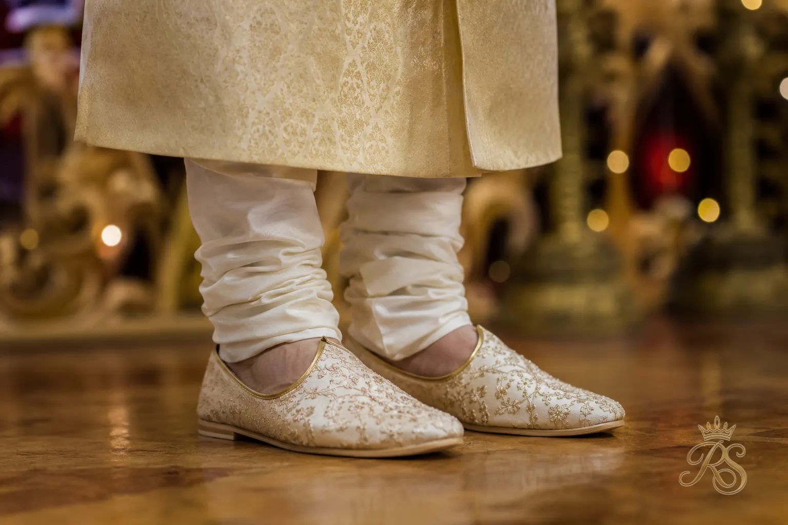
Juttis remain the classic pairing with a churidar or dhoti-style bandhgala look.
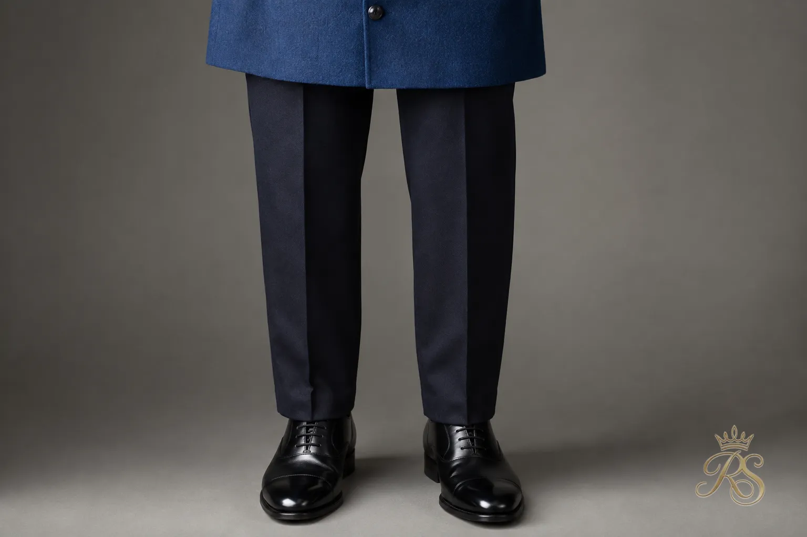
Oxfords or brogues suit a bandhgala worn with tailored Western trousers.
Accessorizing: Brooch, Pocket Square & Stole
Because the bandhgala's collar leaves no lapel for a boutonniere, accessorizing shifts to the chest and shoulder instead — a brooch pinned to the collar or a draped stole becomes the statement piece.
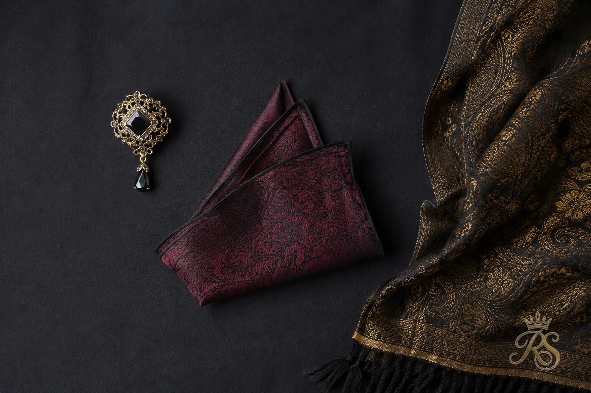
One focal accessory is enough — a brooch or a stole, rarely both at once.
Seasonal Styling: Summer vs Winter
The same silhouette needs a different fabric and lining strategy depending on when the wedding falls — comfort in the heat matters just as much as looking sharp in photographs.
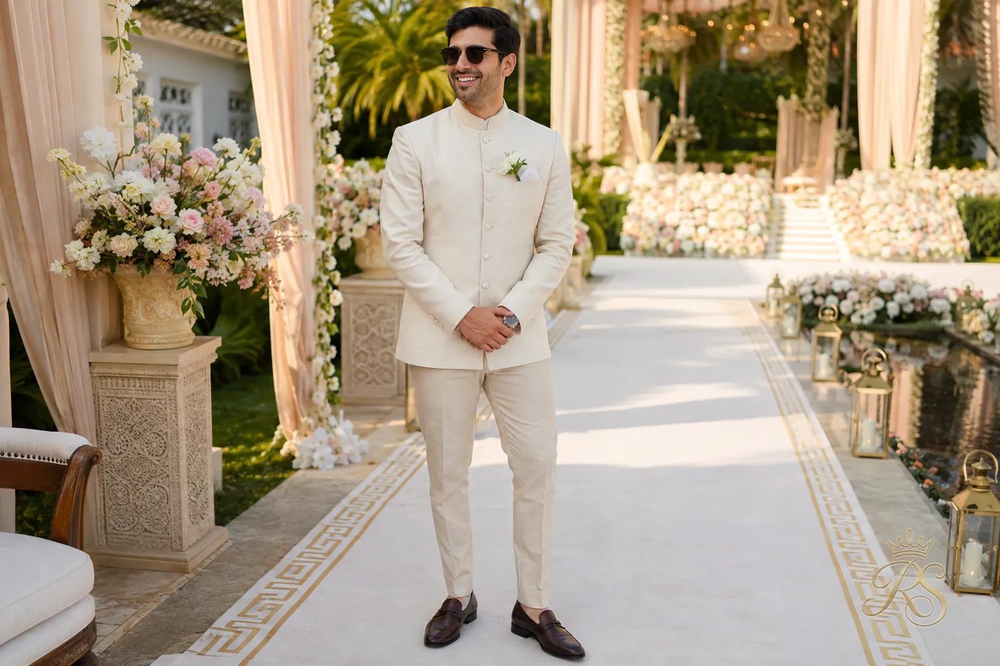
An unlined linen-cotton bandhgala keeps summer functions comfortable through long ceremonies.
Velvet and wool blends add warmth for outdoor winter wedding functions.
Budgeting for Your Bandhgala
Price varies enormously based on fabric, embellishment, and whether it's tailored or off-the-rack — allocating the budget thoughtfully gets a better result than chasing the most expensive fabric alone.
Plan the split: fabric, tailoring, and embellishment all deserve their own line in the budget.
| Category | Suggested Share | Why It Matters |
|---|---|---|
| Fabric | 40–50% | The single biggest driver of how formal and durable the jacket feels |
| Tailoring & construction | 30–35% | A precise fit matters more on a structured jacket than on any other groom piece |
| Embellishment & detailing | 10–15% | Buttons, brooch, and trim add polish without needing a full redesign |
| Total buffer | Keep 10% aside | Covers alterations closer to the wedding date |
Tailor & Fit Checklist
A bandhgala lives or dies on its fit — more than almost any other groom outfit, a slightly-off measurement here is immediately visible because the silhouette is so structured.
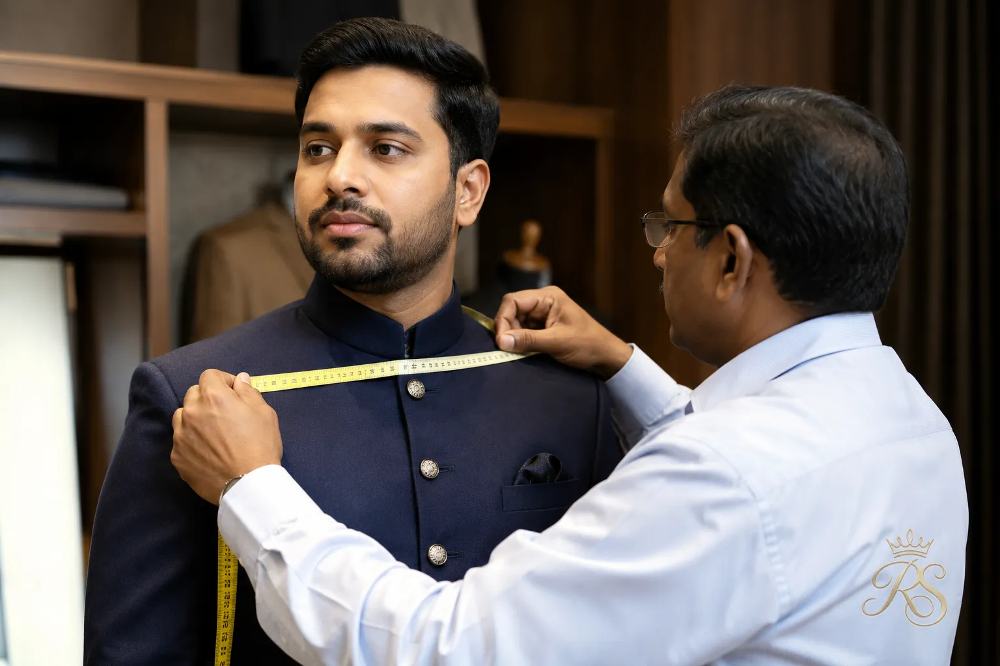
Book at least two fitting sessions — one for the initial cut, one for final adjustments.
- The collar should sit flush against the neck without gapping or digging in when you sit down
- Sleeves should end exactly at the wrist bone, showing a sliver of cuff if worn with a shirt underneath
- The jacket should close smoothly without pulling across the chest or back when buttoned
- Do a full fitting session seated, not just standing — comfort while sitting matters through long ceremonies
Common Mistakes to Avoid
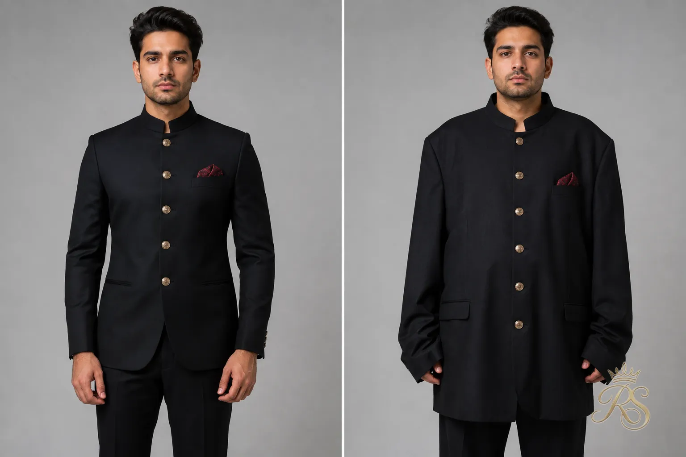
A collar that gaps at the neck is the single most common bandhgala fitting mistake.
- Choosing a fabric too heavy for the season, leading to visible discomfort in photographs
- Over-accessorizing with both a brooch and a heavily embellished stole at once
- Ordering off-the-rack without a proper alteration pass for shoulder and collar fit
- Ignoring how the jacket looks seated — most wedding functions involve hours of sitting
Final Thoughts
Structured, versatile, timeless — the real reason the bandhgala has outlasted so many other wedding trends.
A well-chosen bandhgala does something few wedding outfits manage — it works just as hard in a boardroom years later as it does at the mandap. Get the collar, fabric, and fit right, and it becomes less a wedding purchase and more a permanent addition to the wardrobe.
"A great bandhgala isn't the one that looks the most ornate on the hanger — it's the one that still holds its structure after eight hours of standing, sitting, and photographs."